M 2 (Reversort Engineering)
Lecture - 02
Ad hoc and Implementation - Module 2 (Reversort Engineering)
(Refer Slide Time: 00:11)

Welcome back to the second module of the first week of getting started with competitive programming. In this video, we will be talking about a problem called Reversort Engineering. This will be building upon the reversort algorithm that we discussed in the previous video. So, just in case you have not watched that, please make sure that you do before starting this video. Now, let us get started as usual with the problem statement.
(Refer Slide Time: 00:36)
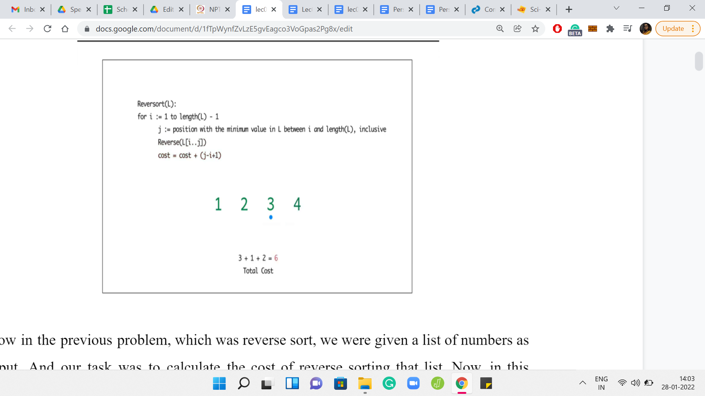
In the previous problem, which was reversort, we were given a list of numbers as input, and our task was to calculate the cost of reversorting that list. In this problem, our task is going to be exactly the opposite, which is to say that we are now given a cost as input, and our task is to produce a list, which has that cost.
(Refer Slide Time: 00:52)

Specifically, we are given two integers n and C as input, and we have to find a list of n distinct integers between 1 and n, such that the cost of applying reversort to this list is exactly C or we conclude correctly that there is no such list. How do you go about tackling something like this? To begin with, notice that the question allows for the possibility that there might be some values of C for which this task is not feasible at all. So, maybe that is a good place to start - To try and understand what is a reasonable range of values for C where this task even makes sense.
(Refer Slide Time: 01:36)

Let us begin by recollecting what reversort actually does. Remember that it goes through N-1 iterations. In each iteration, it tries to locate the minimum element and reverses the sub-array from the current location all the way up to wherever the minimum element is.
Let us recall a couple of minor but important details. The first is that if at any point, you are reversing a sub-array of length 1, it may not feel like you are doing any reversing at all, but it still has a cost of 1 unit. The other thing to remember is that the total number of iterations is N-1 for lists of length N. So, essentially, the last step is something you get for free.
With that in mind, let us try and come up with a lower bound for the cost C. In other words if you are reversorting some array of length N, is there a minimum cost that you have to pay, irrespective of what the array looks like? If you feel like it, take a moment here to pause and think about this question.
So you might notice that reversort has N-1 iterations and because of what we just said, the cost of every iteration is at least 1. There are no free lunches in this entire process at all. So, the cost of reversorting any array of length N is at least N-1. So, if the value of C is strictly less than N-1, then it is pretty safe to declare that there is no such list.
On the other hand, let us think about if there is a list whose cost is exactly N-1. Feel free to take a minute if you needed to think about this. So, if you did have a list whose cost was N-1, what would it look like? We already know that there are N-1 iterations and each of them has a cost of at least 1. So, if the total cost had to be exactly N-1, then we could not afford to have a cost of greater than 1 in any iteration.
(Refer Slide Time: 03:36)

Eventually,

In other words, every iteration must have a cost of exactly 1. When does that happen? Notice that that can only happen if, at every step, the minimum element in that step is already in its correct position. Therefore, the only arrays who have a reversorting cost of N-1 are those which are already sorted, to begin with. In fact, it is interesting to know that for this value of C, the solution is in fact unique.
(Refer Slide Time: 04:15)


So far, we have seen that the cost has to be at least N-1 for us to have a chance of constructing a list with cost C. Now, let us try to understand what is happening on the other end of the spectrum, which is to say, can we come up with an upper bound for the cost C? How large can C be for us to have some hope of constructing a list with cost C?
This time, you want to think about coming up with a scenario where the cost of reversals is as large as it can be in every single iteration. This will lead to some sort of an upper bound. Think about this for a minute and come back when you are ready. So, let us recall that there are N-1 iterations.
But notice that the length of the array that the algorithm is working with is shrinking in each step. So, in the very first step, you are looking at the entire array, and in the worst case, maybe you have to reverse the whole array. In fact, we have seen examples where this actually happens. Right?
So, in the first step, your cost could be as high as N. But in the second step, since the first element has fallen in place, the sub-array under consideration starts from the second index and goes all the way, till the end. Again here, in the worst case, it is possible that your cost of reversal is N-1, but it is certainly no more than N-1.
More generally, in the ith step, the cost of reversal can be as bad as N-i, but no more. And remember that the iterations only go on till the N-1th index. Putting everything together, we know that the cost of reversorting is no more than this sum. If you work it out, it turns out to be and into {[N(N+1)]/2}-1. This is the maximum cost of reversorting any array of length N.
Once again, like before, if the cost that we have is greater than this bound, then we can immediately conclude that there is no list of length N, whose cost is exactly C. But now the more interesting question is the issue of finding a list, which actually realizes this upper bound.
For a given N, can you come up with a list of numbers from 1 to N, whose cost of getting reversorted is exactly the expression that you see here? Feel free to try this out for some small values of N. I will say that this question is slightly harder than the question of coming up with a list whose cost was exactly N-1. So, take your time and come back to this lecture when you are ready.
(Refer Slide Time: 06:36)
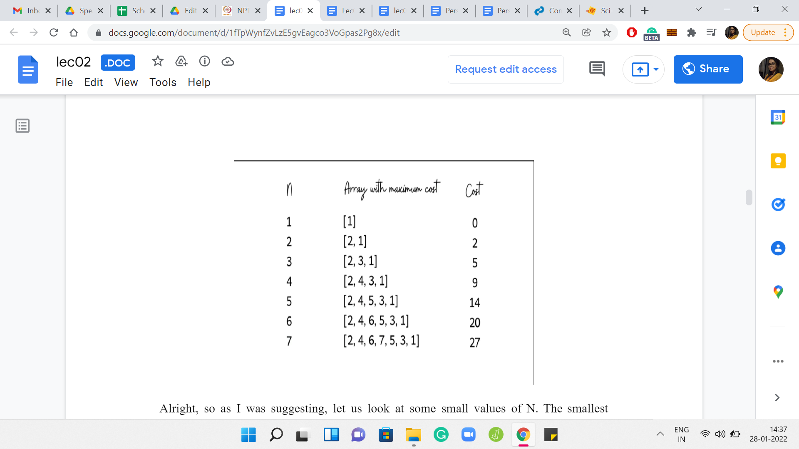
As I was suggesting, let us look at some small values of N. The smallest possible value of N that makes sense is 1. Notice that the cost of reversorting, the only array of length 1 is actually 0 because remember, we have N-1 iterations and here, therefore we will have none.
The next value of N is 2. There are only two arrays of length 2 over the numbers 1 and 2. So, the array ‘1, 2’ is already in its proper order and the cost of reversorting it is just 1. The array ‘2, 1’ requires a swap in the first step and has a reversort cost of 2. This, of course, is perfectly valid. But notice that we took a brute force approach to coming up with the solution. This is not likely to scale well for large values of N.
Let us try to arrive at the same conclusion but in a slightly more general way. This may be a slightly funny exercise, because we are dealing with a really small array, but bear with me. We will also go through this when N=3. Hopefully, things will become clearer as we go along.
Let us think in slightly more general terms about the task of coming up with a list whose cost is as high as it can be. What should we aim for in the first step? Well, in the first step, the maximum cost that we can have is N, which happens when you have to reverse the entire array. When would you reverse the entire array? You would do that if the minimum element is at the very end. So, we already know that in our array, we are forced to place the number 1 at the last position.
Now, we have to fill up the rest of the array, just to say that we now turn our attention to the first N-1 slots of the array. Of course, with N being just 2, we only have one slot remaining and it is no surprise what should go in there. But bear with me, let us just continue thinking about a general strategy for filling up these first N-1 slots.
Notice that in the row above, we already have an array of length N-1 whose cost is as high as it can be. So, it seems like a tempting idea to just copy-paste that array in these N-1 slots that we are yet to fill. What is the effect of this? The first thing is that we are no longer left with a valid permutation because we have copy-pasted an array that consists of numbers from 1 to N-1. We also have a 1 at the very end.
But as you will see, what really matters is not the specific numbers, but their relative order. So, to fix this and to turn the current array into a permutation, let us just bump up each of the first N-1 elements by a plus 1. This brings us to the array ‘2, 1,’ which is the solution that we had identified, to begin with, by just exploring both the possibilities that we had at hand.
Let us just make a note of the cost here and move on to the case when N=3, where this whole process might be a little more visible. Notice that as before, to begin with, we have to place 1 at the very last position, if we want the first step to have the maximum possible cost. After this, to fill in the blanks like before, let us just pull down a copy of the array from the previous row. Noting that we do not have a permutation yet, let us just go ahead and upgrade each of those numbers by 1.
Notice what happens when you run reversort on this array that we have. In the first step, as we predicted, the whole array gets reversed and that has a cost of 3. But after that, notice that we actually have a fully sorted array. So, in the second iteration, we would not get the maximum cost that we are looking for, it is just going to be a cost of 1 for a total cost of 4. That means that we still have some work to do.
So, what is going wrong here? Although we did copy-paste a full cost array from the previous row, notice that that array gets damaged after the first iteration. We have designed our array so that the first iteration reverses the whole list. So, as a result, the list that we carefully copied over from the previous step also gets reversed.
But the list that we had in the previous step is the list that we want to see at the start of this second iteration, after the first reversal. So, to ensure that is what happens, all we need to do is reverse the list in advance so that the first reversal will reverse it back to what we actually wanted to see.
You can pause the video here and convince yourself that this list that we have here has a cost of 5, which is the maximum cost that you can expect from an array of length 3. Now, you can repeat this process quite predictably for larger and larger values of N. Every time you will be able to leverage the list that you build in the previous step to obtain a full cost list in the current step.
(Refer Slide Time: 11:38)

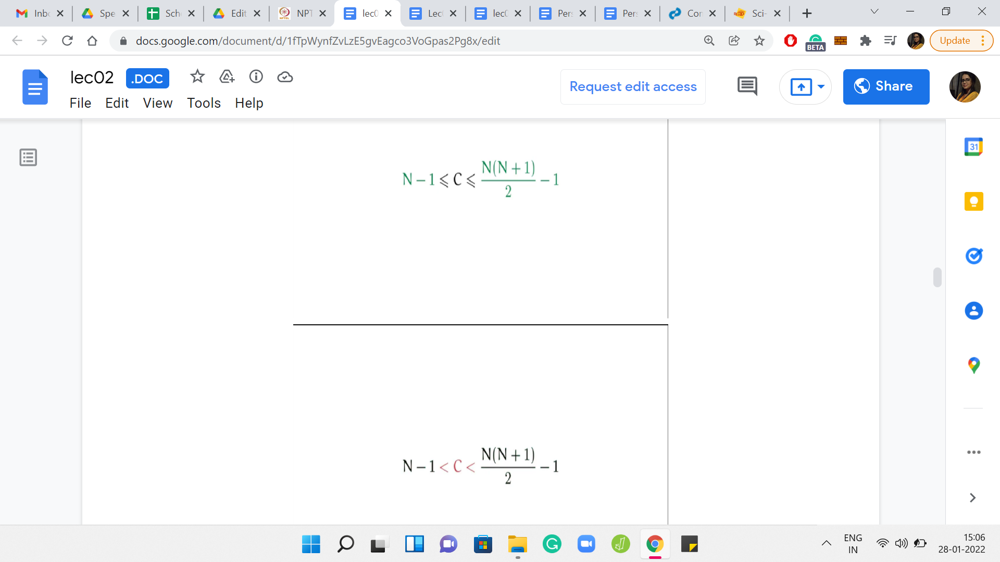
Let us recap what we have learned so far. We have established some boundaries on the values of C. We said that C has to be at least N-1 and at most {[N(N+1)]/2}-1. Anything outside of this is already impossible. For these specific extreme values, we are also able to come up with strategies for building lists whose costs are these exact values.
Notice, however, that we are still left with the question of what happens when C lies strictly between these two extremes. Then by just looking at these inequalities, it is not completely obvious if we can always build a list of length N whose cost is exactly C. Let us think about the recursive approach that we just used for building a list of the maximum possible cost. In fact, let us just play with a few scenarios to build up some intuition and from there, hopefully, we will be able to develop an actual algorithm.
(Refer Slide Time: 12:18)
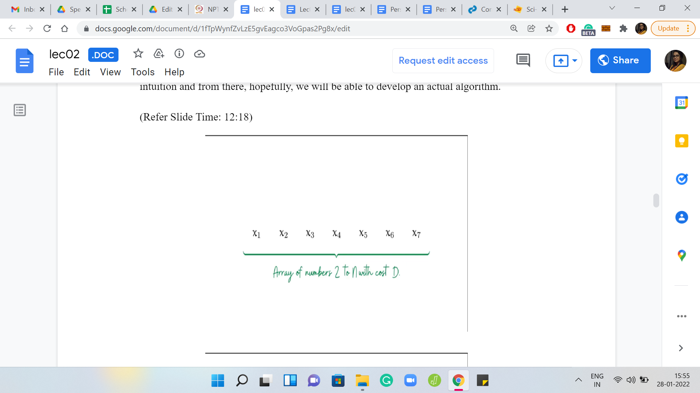
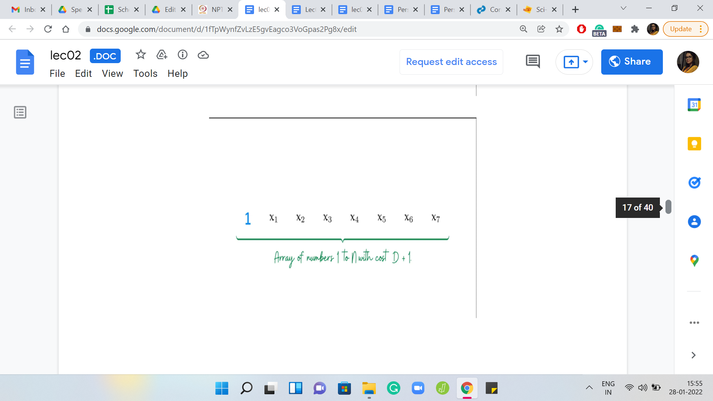


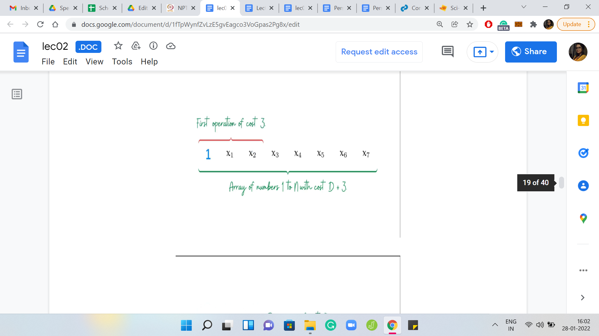

Eventually,


Suppose somebody gifts you an array of numbers from 2 to N, whose cost is D. Can you use the array to build an array of numbers from 1 to N, whose cost is, say, D+1? Notice that that is easy, you can do that by just adding element 1 to the head of the array. This way, the first step essentially has cost 1, and the second step encounters the original array and from there on, the total cost of the algorithm will be D.
What if you wanted to build an array of numbers from 1 to N, whose total cost was D+2, instead? Well, then the natural thing to do seems to be to push element 1 to the second position so that the first step will have a cost of 2. Then, again you are left with the original array that you started with. From the second iteration onwards, you will have a cost of D.
This array that you see right here has a total cost of D+2. What if you wanted to build an array whose total cost was D+3? It seems like the natural thing to do again would be to push 1 a little further up. But remember, just like we had this problem before, this particular array will not have a cost of D+3, because the first step will cause a reversal, which will mess up with the structure of the original array.
In particular, after the first step, the array is going to look like 1, x2, x1, x3, and so on. So, you have really lost the base array that you started with. To fix this, we should swap the elements x1 and x2. Now this array, overall, will have the desired behavior. Notice that in the first step, the reversal will give us the array 1, x1, x2, and so on. That is exactly what we were looking for.
You can probably see where this is headed. If somebody gives you a base array of numbers from 2 to N with the cost of D, then you can make use of this array to build an array of numbers from 1 to N, with a cost of, say, D+4, D+5, and so on. In fact, you can do this for any D+x, for any x in the range 1 to N.
(Refer Slide Time: 14:33)
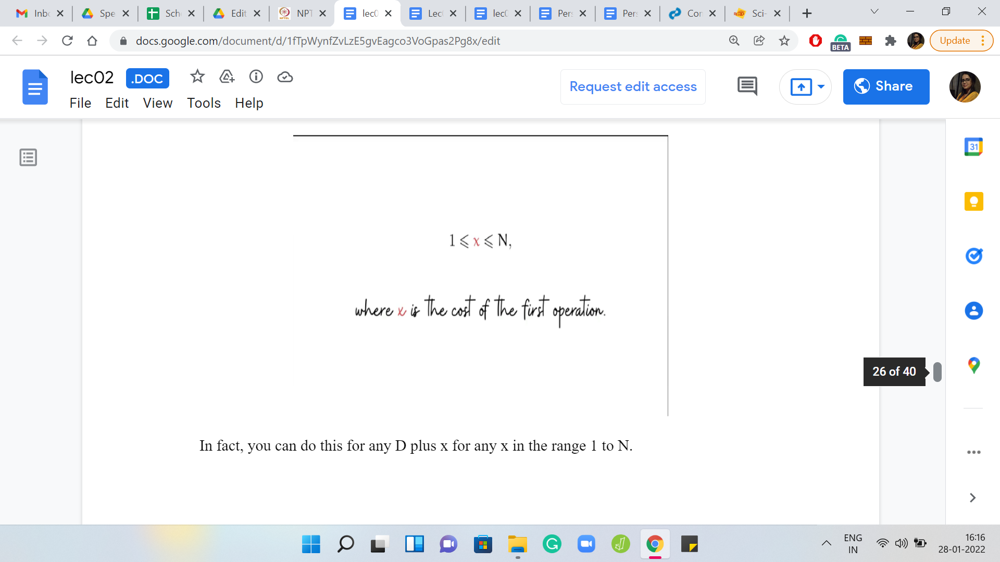

Let us go back to the big picture and try and understand why all this is useful. To begin with, remember that when you are working with N, here is the valid range of values for C. C has to be at least N-1 and at most {[N(N+1)]/2}-1. Let us add to this picture the valid range of values for C relative to N-1.
That is going to be N-2 for the lower bound and {[N(N-1)]/2}-1 for the upper bound. So, the idea is that you are starting with a cost C that is in the green range, and if you can subtract from it some amount that will take you to the red range, then the recursive algorithm pretty much writes itself.
But the question is, can you always subtract something appropriate? Can you always subtract something that is workable? Well, notice that the difference between the two upper bounds is exactly N. What this means for us is that no matter where the original cost lies, as long as it is lying within the valid green range, we will always be able to subtract a quantity x, which is such that it is between 1 and N so that we get a cost which lies in the red range.
Then we can pass this off to the recursion fairy, which will do its thing, and it will be able to give us an array whose elements are between 1 and N-1, and that has caused C-x. And of course, you can just add 1 to each of these elements to get an array of numbers between 2 and N, which have a cost of C-x to be reversorted.
As the final step, what you want to do is add the number 1 in the correct place to adjust for the cost of x. You want to add the number 1 at the exit position from the left, and everything that you have before the number 1 needs to be reversed so that when the first reversal happens, you recover the array that you obtained from recursion.
(Refer Slide Time: 16:40)

By now, I think we have everything that we need to know to be able to implement this solution. Let us just do a super quick high-level recap, and then we will switch over to coding. The first thing we want to do is check the range of C. If C is not within the valid range, then we can immediately conclude that this is an impossible situation and we say as much. But if C is within the valid range, then we need to figure out how much we need to shave off from C to land in a valid recursive sub-instance.
Once we do that, we obtain the array from recursion, adjust its values, place one in the correct place, and execute one final reversal to get to the array that has the desired cost. With all this being said, I think it is time to start coding. If you want to do this yourself, by all means, this is your usual spoiler alert, you might want to pause the lecture here and come back to it after you have given it a shot yourself.
(Refer Slide Time: 17:29)


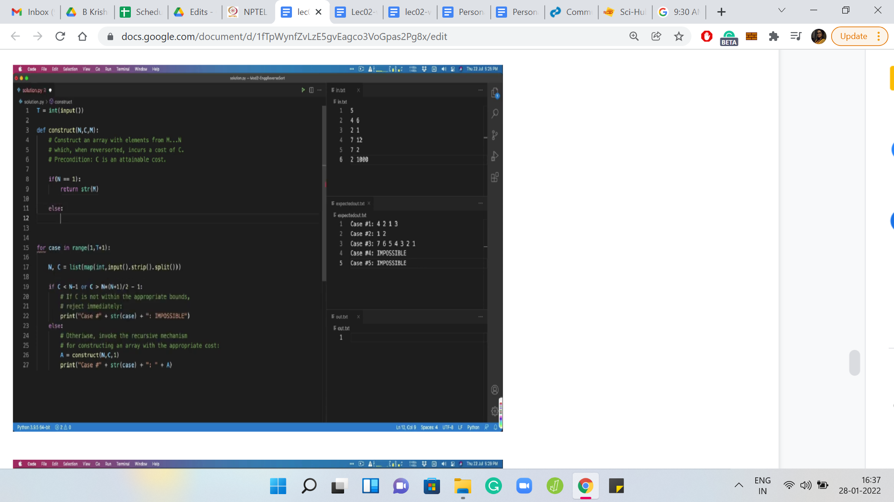


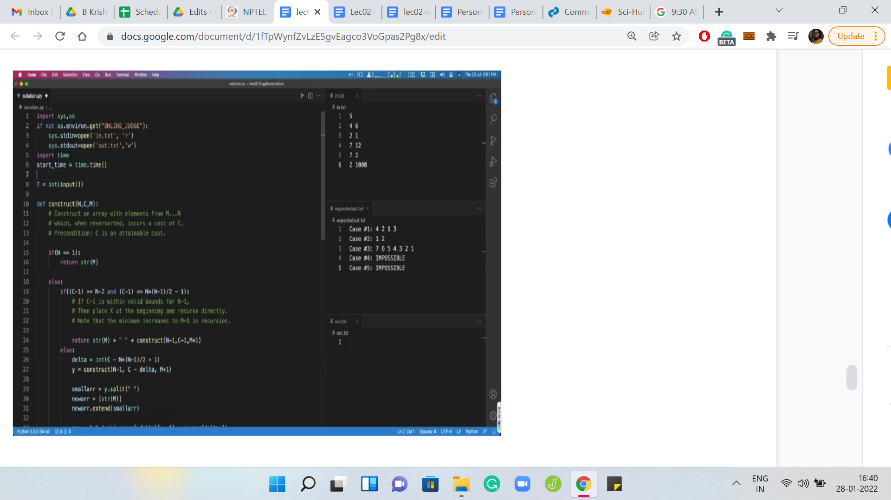
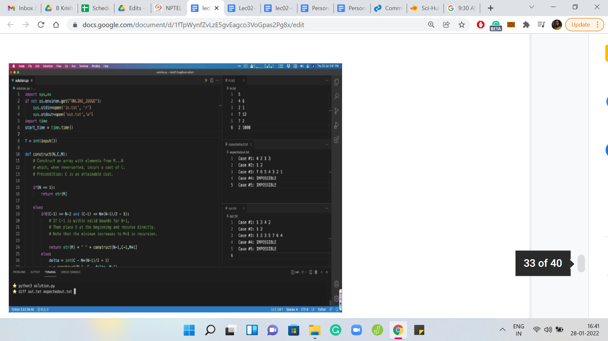
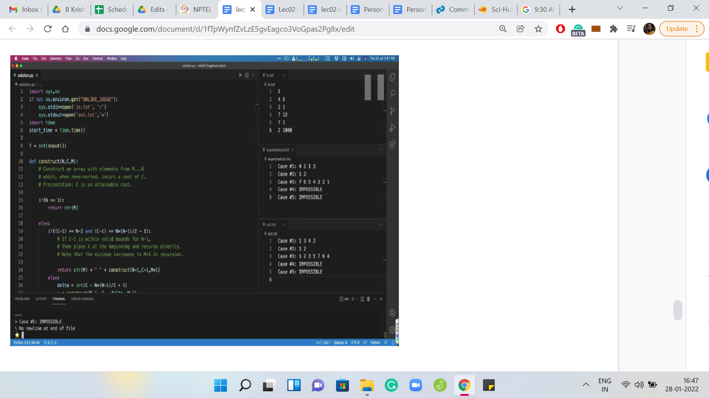

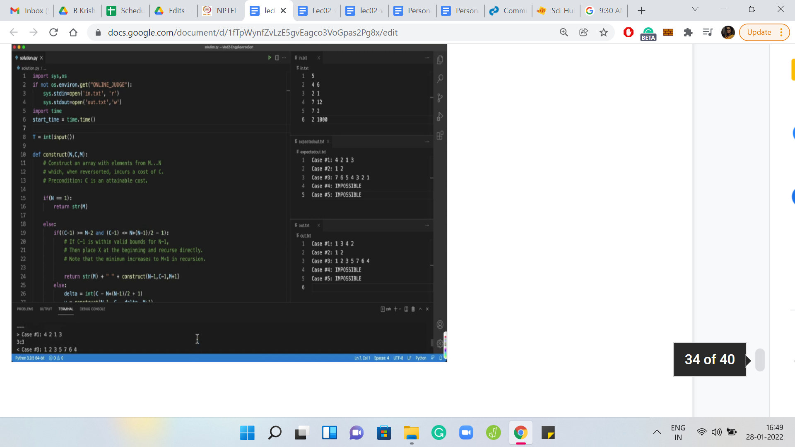
So, we have our usual setup here. As before, I have pulled in the values of the sample input and outputs for your reference in the files to the right. Now, the sample outputs for this problem are a bit different from usual, in the sense that it is not going to be a character-by-character match as it usually is for most problems. Notice that, for some values of N and C there might be multiple arrays of numbers between 1 and N whose cost is exactly C.
In this case, the problem description says that as long as you print any one of them, your answer will be accepted. Your judge in this case is not going to be doing a character-by-character comparison with some sample output. But rather, it is going to take up the array that you output and it is going to compute the cost of reversorting it and check if it matches the expected cost.
If your output does not match with the sample output, maybe because you had a different way of generating these arrays, then do not worry about it too much. Although I would recommend writing down a function that computes the cost of reversorting an array. You have probably already done this if you have solved the previous problem.
So, you could use that function as a way to sanity-check your own answers. Once you are producing an array, just use this function to compute its cost, and see if it matches with the expected cost. Rather than trying to do a character-by-character comparison with the expected output, especially if it does not match.
Moving on, I have already set up the parts about taking in the input. The output format is the usual Code Jam output format. You have to output case number x, followed by either the list or the word IMPOSSIBLE depending on the situation.
Let me come back to the code. What is already done for you is the basic case analysis that we discussed in the beginning. So, if the cost C is not in the appropriate range that we discussed, then we just print IMPOSSIBLE directly. Otherwise, we have a helper function, which will actually construct this array for us, and you just print this array in the next step.
Let us focus on building out this helper function because then we would pretty much be done. So, the construct function takes three parameters as input. The first two are quite natural: it is the length of the array you want to construct, that is N, and it is the cost that you want to achieve, that is C.
The third parameter tracks the current minimum value of the array. To begin with, of course, this is 1. But in general, as you unravel the recursion, you will want to increase the value of this minimum element. There are other ways of implementing this, but I just found this one to be the most convenient.
Let us try and see how we would actually do this. Let me just begin by pasting the function signature to save time. N and C are defined as before and M is the variable that we will use to track the current minimum. Now, whenever I am writing a recursive function, I like to get the base case out of the way first, to avoid dangerous situations. So, the natural base case here is when N=1.
So, this is an array of length 1 where the minimum element has to be M. We do not have to worry about whether we are working with a valid cost because we kind of know that to be a precondition. So I am not going to really check for anything. The cost here must, in fact, be 0 by the time we have hit the base case.
If you want, you could write a condition to check for this. But I am reasonably confident that because the costs were within the valid range, to begin with, they will continue to be within the valid range when we come down to the base case. So, here, I am just going to return the trivial array with just the element M.
Alright, the more interesting case is what follows. Let me just pull up the picture, which represents our main solution idea. These are the relevant ranges that we are working with. Just going to get one easy case out of the way, which is to say that, when you reduce the cost by just 1, if you already fall within the valid range for N-1, then let us just do that and add the number 1 in the beginning.
Just to save time, I am going to copy-paste this section of the code here and just take a look at what we are doing. So, we are saying that if C-1 is at least N-2, and C-1 is at most {[N(N-1)]/2}-1, then let us just invoke this function with length N-1 cost C-1 and of course, the minimum upgraded to N+1. We get this array, and then we just add the current minimum to the start of the array. In the beginning, this will be 1, but in a generic situation, you want to add the minimum element in the beginning and append the constructed array at the end.
Hopefully, this case is clear. Otherwise, we just have a little bit of extra work to do, which is to say that, we have to figure out how much to subtract from the cost C, before delving into the recursion. This is the case when the current value is kind of between the right red point here and the right green point here. When you are here, you essentially know that you are within a length’ band N, but you need to figure out exactly where you fall so that you can subtract the right amount to get into the safe zone with respect to the red range, in some sense.
Let us write down that difference. It is essentially going to be the current cost minus the lower bound. If you subtract {[N(N-1)]/2}-1 from the current cost, then you would have x, which is what do you want to subtract. So, I am going to call that difference delta.
Now we want to construct an array whose cost is essentially C - delta, and an array of length N-1 and as usual with an upgraded minimum, which is N+1. So, we are going to invoke the current function. This is essentially the recursive step.
Now, in the previous case, we could just place M at the head of the array. We have a little more work to do, which is to say that, we need to find the right place to place the minimum element M. Then we need to reverse everything that comes before it.
Let us go ahead and do that. We will, first of all, convert this string into an array because that is going to be useful for the kind of manipulations that we will need to be doing later, in particular, reversing a part of the array and so on. Notice that this array has the minimum element at the first position because that is all that we have done so far.
Let us see if we can perform the reversal that we need to do. Let us focus on what is inside the join function, which is the array-manipulation that we are doing. Notice that we are working with a new array, which just has the minimum element followed by everything we got from recursion, and we are walking up to the deltath element.
Remember, that delta is excluded because of 0 based indexing. We essentially need to reverse that entire chunk. Then, we simply add on all the remaining elements of the array. Since construct needs to be returning a string, all we are doing here is converting this array back to a string. And at this point, we are actually done.
Now, there are some small formalities that remain. Let us take care of them first. Notice that we have not yet returned the answer that we have so painstakingly created. One thing that is nice about VS Code is that it gives you this muted color for those variables that you have declared, but have not used yet. So, that is already a hint that I have left something hanging.
Let us return the answer. At this point, all that remains to be done is to actually run this code and see how it works. Let me add the template to redirect the input-output to files. Let us run this program. So, we get some output. Notice that if I were to run a diff on my output with the expected output, then we do get some differences here. You can visibly see that the arrays that we are producing are a little bit different from the official outputs.
As I said, in the beginning, this has nothing to worry about. But I will leave it as a bit of an exercise for you to come up with a different way of generating these arrays that possibly match with the sample outputs. Although it is not clear to me if the sample outputs were driven by an algorithm that generated them or if they just wanted to deliberately throw us off by using solutions that are different from, perhaps, the natural algorithm.
In any case, what is really worth doing is sanity checking that the arrays that you are generating do have the cost that you expect them to have. So, for instance, for the first array here, we were supposed to have a cost of 6. Let us quickly see what reversort would do here.
In the first step, you will have a cost of 1 because the minimum element is sitting right there. The next step: You will have a cost of 3 because the minimum element is at the very end. At this point, your array would look like 1, 2, 4, 3. So, the last two elements would need to be swapped, in the last step. That is an additional cost of 2. This array does have a total cost of 6. You can also verify that the array that appears in case number three has a cost of 12.
Again, do try this out. Try writing a version of the solution on your own, and do upload it on the Code Jam platform and let us know how it went for you. I look forward to seeing you in the next video. That will be all for now. Thanks so much and have a great time!